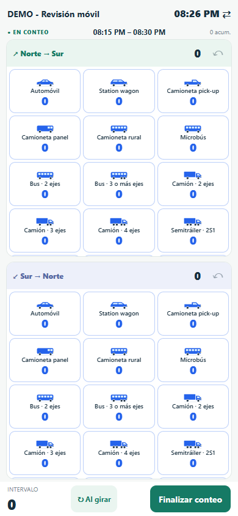

Un estudio a tu medida
Define proyecto, responsable, horario e intervalos. Elige las categorías y los nombres de cada sentido.
TECNOLOGÍA PARA EL TRABAJO DE CAMPO
Creamos herramientas prácticas para observar, registrar y entender lo que ocurre a nuestro alrededor.
Conoce Flux VialNuestra primera aplicación. Una nueva forma de contar.

Vista real de la aplicación · datos de ejemplo
UNA HERRAMIENTA, CADA MOVIMIENTO
01by Construcplace
Aforos vehiculares y peatonales desde tu celular. Configura tu estudio, cuenta en uno o dos sentidos y convierte tus registros en un informe claro.
Google Play · Próximamente
Actualmente en pruebas. La descarga pública se anunciará aquí.
Define proyecto, responsable, horario e intervalos. Elige las categorías y los nombres de cada sentido.
Registra vehículos o peatones, adapta la pantalla al giro y deshaz el último registro si lo necesitas.
Genera un PDF con los datos del estudio y los conteos por categoría, sentido e intervalo.
EN CAMPO, CON TRANQUILIDAD
Flux Vial guarda los estudios localmente y permite contar sin conexión. Tú decides cuándo generar y compartir el informe.
Conoce cómo tratamos tus datosHABLEMOS
Consultas sobre Flux Vial, sugerencias y privacidad.